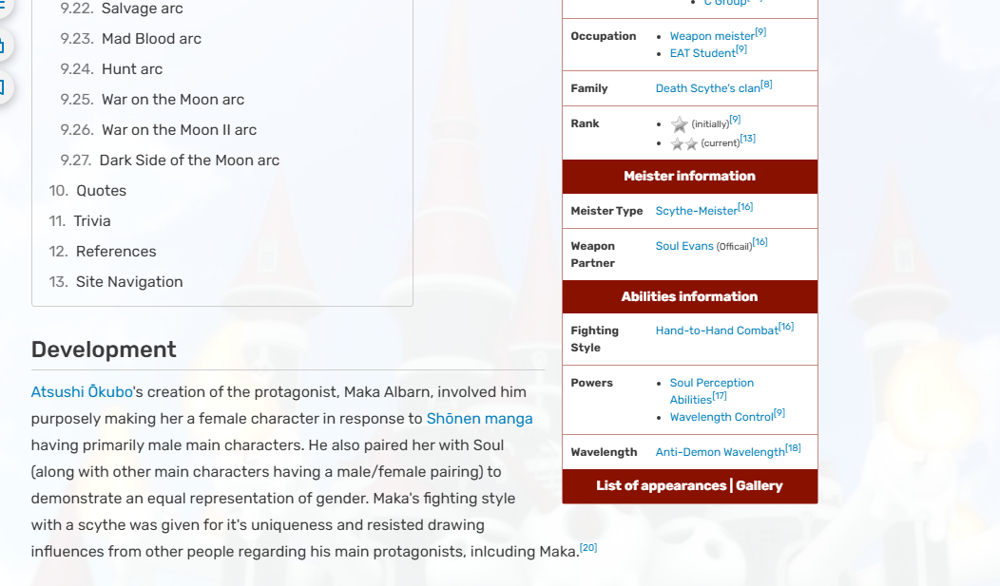

Website Overview
Name and URL
Soul-Eater PediaTarget Audience
Fans of the anime "Soul Eater", or those who are interested
Fans of the anime "Soul Eater", or those who are interested
This site has a Hierarchical Organization
It recieved an Audit Score of 52%, meaning that is is of high risk of recieving a lawsuit
I think repetition is used the most because it every the text of equal importance and role are styled the exact same way

The site is very effective, the navigation buttons are very straight forward (hyperlinks being on keywords, selecting character based on their image, etc.)
The site is very efficient, being able to navigate through the page extremely quickly
I would say that the site is pleasant to use, especially since it is made for anime (inherently unserious)
Utilize more solid borders around images in order to further differentiate more from the background (since they are black and white)